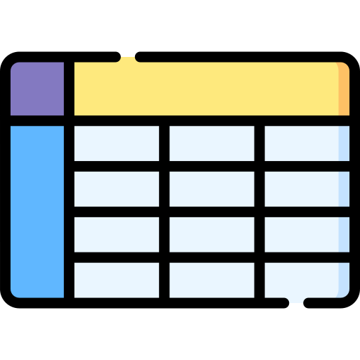

Белорусский национальный технический университет
Факультет информационнных технологий и робототехники
Кафедра программного обеспечения информационных систем и технологий
Курсовая работа
по дисциплине языки программирования
Генератор расписания

Выполнили: студенты группы 10701122
Давыдовский Иван Юрьевич
Ханяк Евгений Дмитриевич
Преподаватель: к.ф.-м.н., доц.
Сидорик Валерий Владимирович
Далее
Выход